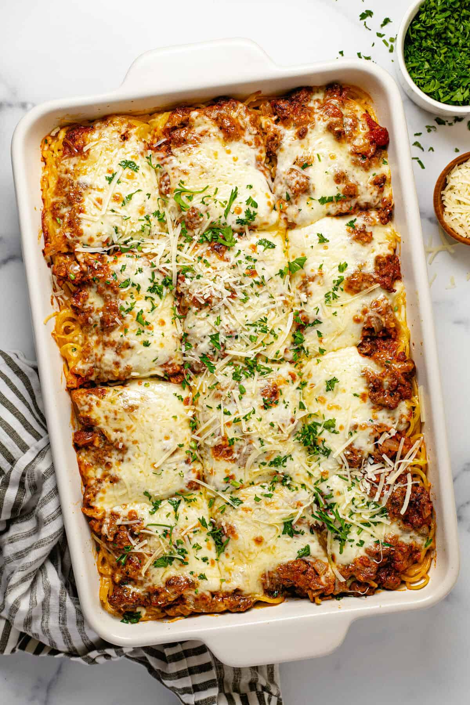

Baked Spaghetti

Description
Baked Spaghetti is a delightful twist on the classic spaghetti dish, transfomring
it into a comforting and cheesy casserole that's perfect for family dinners or
gatherings.
Imagine layers of tender spaghetti noodles intertwined with a rich and savory meat sauce,
all smothered under a blanket of melted mozzerella and sharp parmesan cheese.
Ingredients
- 1 (16 ounce) package spaghetti
- 1 pound ground beef
- i onion, chopped
- 1 (32 ounce) jar meatless spaghetti sauce
- 1/2 teaspoon seasoned salt
- 2 eggs
- 1/3 cup grated Parmesan cheese
- 5 tablespoons butter, melted
- 2 cups small curd cottage cheese
- 5 cups shredded mozzarella cheese, divided
Steps
- Gather all ingredients. Preheat the oven to 350 degrees F (175degrees C).
Lightly grease a 9x13-inch baking dish
- Bring a large pot of lighty saltedwater to a boil. Cool spaghetti in boiling water,
stirring occasionally, untill tender but firm to bite, about 12 minutes. Drain.
- Meanwhile, heat a large skillet over medium heat. Cook and stir beef and onion in the hot skillet
until meat is browned and onion is soft and translucent, about 5 to 7 minutes.
- Drain excess oil from the pan; stir in spaghetti sauce and seasoned salt.
- Whisk eggs, Parmesan, and butter in a large bowl. Add spaghetti and toss to coat.
- Place 1/2 of the spaghetti mixture in the prepared baking dish. top with 1/2 of
the cottage cheese, 2 cups mozzarella, and 1/2 of the meat sauce. Repeat layers.
Cover with aluminium foil
- Bake in the preheated oven for 40 minutes. Remove the foil and sprinkle with
remaining 1 cup mozzarella
- Continue to bake untill cheese is melted and lightly browned, 20 to 25 minutes
- Serve and enjoy!